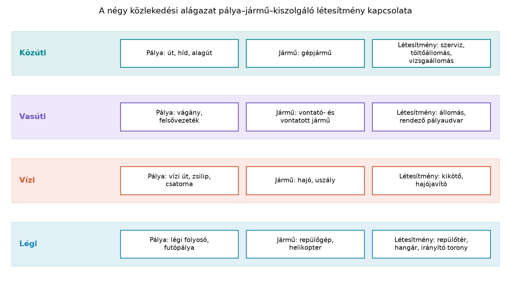

Autószerelőként az első gondolatod az lehet, hogy a vasúti váltó vagy a hajó merülése nem a te munkád. A mindennapokban viszont ugyanaz a logika működik, mint a műhelyben: minden közlekedési rendszer pálya + jármű + kiszolgáló létesítmény hármasra épül. Amikor egy kisteherautó forgalmi engedélyéből kiolvasod az N1 kategóriát, a megengedett legnagyobb össztömeget és a vontatható tömeget, ugyanazt a rendszerszemléletet használod, mint amikor egy vasúti szerelvény pálya-jármű kapcsolatát vagy egy hajó vízkiszorítását értelmezed. A négy alágazat áttekintése segít elhelyezni a közúti járművet a nagyobb műszaki rendszerben, és megalapozza a járművek fő szerkezeti részeinek, valamint a motor működésének későbbi tanulását.
A következő vázlat a négy alágazatot hasonlítja össze:

A vázlat lényege: minden alágazatnál ugyanazt a három kérdést kell feltenni. Hol halad a jármű? (pálya). Mi viszi az utast vagy az árut? (jármű). Hol kap üzemanyagot, javítást, biztonsági ellenőrzést? (kiszolgáló létesítmény). Ha ezt a hármast megértjük, a műszaki adatok is érthetővé válnak.
Definíció. Közlekedési alágazatnak nevezzük a közlekedés azon nagy részrendszerét, amelyre jellemző a pálya fajtája, a járművek kialakítása és a rájuk vonatkozó szabályozási, irányítási és kiszolgálási környezet. Hagyományosan négy alágazatot különítünk el: közúti, vasúti, vízi és légi közlekedést.
Definíció. A pálya az a mesterségesen kialakított vagy kijelölt közlekedési út, amelyen a jármű közlekedik. A pálya lehet kiépített (út, vasúti vágány, repülőtéri futópálya) vagy természetes, illetve kijelölt (vízi út, légifolyosó).
Definíció. A közlekedési jármű a pályán való haladásra szolgáló, energia átalakítására és mozgásra képes műszaki berendezés. A járműveket elsősorban hajtásuk, futóművük, irányításuk és teher-, illetve személyszállító képességük jellemzi.
Definíció. A kiszolgáló létesítmény minden olyan építmény, terület és berendezés, amely a jármű és a pálya üzemeltetését, a jármű feltöltését, karbantartását, javítását, tárolását és a hatósági ellenőrzést szolgálja.
A közúti pálya az útpályából, a padkából, a vízelvezető rendszerből, a műtárgyakból (hidak, alagutak) és a forgalomtechnikai elemekből áll. A közutakat funkciójuk és kialakításuk szerint osztályozzák, például autópályákra, autóutakra, főutakra, mellékutakra és helyi utakra (ellenőrizendő: a hatályos közúti osztályozási előírás). A pályaszerkezet tipikusan több rétegből áll: az alépítmény teherviselő földmű, a felső pályaszerkezeti rétegek teherátadó burkolatot alkotnak. A burkolat lehet aszfalt, beton vagy alacsonyabb rendű utakon kötött vagy kötetlen felület. A burkolat állapota közvetlenül befolyásolja a jármű gördülési ellenállását, a kopást és a zajt.
A közúti járműveket az európai gyakorlatban L, M, N és O kategóriákba sorolják (ellenőrizendő: a hatályos EU járműkategóriák meghatározása). Egyszerűsítve: L a két- és háromkerekű, valamint könnyű négykerekű járművek, M a személyszállítók, N a tehergépjárművek, O a pótkocsik és félpótkocsik kategóriája. A pontos részleteket a Járműkategóriák és a közúti járművek fő műszaki adatai alfejezet tárgyalja.
A közúti jármű fő szerkezeti egységei:
Az alábbi kivágott rajz egy elsőmotoros, elsőkerék-hajtású személyautóban mutatja meg ezeknek az egységeknek a helyét; a rajz egyben a könyv későbbi részeinek „térképe” (a HTML-változatban az egységre mutatva a kapcsolódó alfejezet linkje jelenik meg).
Továbbvitt eredmény. A közúti járművek kategóriáit és fő műszaki adatait a Járműkategóriák és a közúti járművek fő műszaki adatai alfejezetben használjuk, a belső égésű motorok működésének részletes tárgyalását pedig a Belső égésű motorok csoportosítása, a négyütemű Otto-motor működése és körfolyamata alfejezetben.
A közúti járművek nagy része négyütemű belső égésű motort használ. A négy ütem sorrendje:
Az Otto-motor külső gyújtású: a keveréket gyújtógyertya szikrája gyújtja meg. A dízelmotor öngyulladású: a nagyon nagy sűrítési arány miatt a forró levegőbe befecskendezett gázolaj magától gyullad meg. A pontos körfolyamatot, a szerkezeti kialakítást és a beállítási adatokat a V. rész motoros fejezetei tartalmazzák.
A tehergépjárművek csoportosítása a megengedett legnagyobb össztömeg és a felépítmény szerint történik. Gyakori típusok: furgon, kisteherautó, dobozos tehergépkocsi, billenőplatós, tanker, nyerges vontató félpótkocsival. A nyerges szerelvény vontatóból és félpótkocsiból áll; a félpótkocsi a vontató nyergén támaszkodik, ezért a vontató hátsó tengelye a félpótkocsi tömegének jelentős részét viseli.
A közúti jármű legfontosabb műszaki paraméterei:
Ezeket az adatokat a forgalmi engedély, a gyártói adattábla és a járműokmányok tartalmazzák. Javítás előtt ezekből állapítható meg, hogy milyen célszerszámmal, emelővel és vizsgapadi eljárással dolgozhatunk.
A közúti közlekedés kiszolgáló létesítményei közé tartoznak a töltőállomások (benzin-, dízel-, elektromos töltőállomások), a szervizek és márkaszervizek, a műszaki vizsgálóállomások, a parkolók, a pihenőhelyek és a mosóállomások. Az autószerelő munkája tehát a közúti kiszolgáló lánc egyik eleme: a jármű műszaki állapotának fenntartása és a hatósági vizsgára való felkészítés.
A vasúti pálya legfontosabb eleme a vágány, amely a felépítményből (sín, talpfa vagy betonlemez, ágyazat, lekötő elemek) és az alépítményből (földmű, hidak, alagutak) áll. A két sínszál közötti távolságot nyomtávnak nevezzük. Magyarországon és Európa nagy részén a normál nyomtáv 1435 mm (ellenőrizendő: a hatályos vasúti nyomtávadatok). A vágánykapcsolások teszik lehetővé a járművek átirányítását egyik vágányról a másikra; ilyenek a váltó (kitérő), a keresztezés és a vágánykereszteződés. A villamos vontatású vonalakon felsővezeték és áramszedő biztosítja az energiaellátást.
A vasúti járműveket két nagy csoportra bontjuk. A vontató járművek saját hajtással rendelkeznek: villamos mozdony, dízelmozdony, villamos motorvonat, dízel motorvonat. A vontatott járművek nem rendelkeznek saját hajtással; ide tartoznak a személykocsik, a teherkocsik, a pőrekocsik és a különleges rendeltetésű kocsik. A vasúti futómű jellegzetessége a kerékpár, amelynél a két kerék mereven egy tengelyen van, és a nyomkarima vezeti a járművet a sínen. A vasúti járművek fékrendszere gyakran sűrített levegős: a szerelvény fővezetékén átadott nyomáscsökkenés hozza működésbe a fékhengereket, amelyek féktuskókat vagy tárcsaféket működtetnek.
A vasúti kiszolgáló létesítmények az állomások, a rendező pályaudvarok, a járműtelepek, a fűtőházak és a karbantartó műhelyek. A vasúti közlekedés nagy tömegű szerelvényeket tud egyetlen vontatóval gazdaságosan továbbítani, mert az acél kerék és az acél sín közötti gördülési ellenállás kicsi.
A vízi közlekedés pályája a vízi út, amely lehet természetes folyó, tó, tenger vagy mesterséges csatorna. A folyami vízi utaknál gyakoriak a zsilipek, amelyekkel a vízszintkülönbséget hidalják át. A tengeri hajózásban a „pálya” kijelölt hajózási útvonalakból, elválasztási rendszerekből és kikötői megközelítő útvonalakból áll.
A hajók fő méretei:
A vízi jármű haladását általában hajócsavar (propeller) biztosítja, amely a víz ellenében kifejtett tolóerővel hajtja a hajót. Az irányítást a hátul elhelyezett kormánylapát végzi. A hajótest felépítése: orr (bow), tat (stern), fedélzet (deck), felépítmény (a lakó- és parancsnoki terek), géptér és rakterek. A folyami és tengeri kikötők a hajók be- és kirakását, a hajóműhelyek a javítást, a kikötői terminálok az árukezelést szolgálják.
Szabály. A lebegő hajóra ható felhajtóerő egyenlő a kiszorított víz súlyával; ez az Archimédész-törvény. Ezért a hajó merülése a tömegtől és a víz sűrűségétől függ.
A légi közlekedés pályája a légtér, amelyben a járművek kijelölt légi útvonalakon, irányítás mellett haladnak. A repülőtéri földi pálya a futópálya, a gurulóút és az előtér rendszere.
A repülőgépeket több szempontból osztályozzuk:
A repülőgép fő szerkezeti részei:
A repülőgépek szárnya a levegőben való mozgás révén felhajtóerőt hoz létre, amely egyenletes vízszintes repülésben a repülőgép súlyával tart egyensúlyt. A kiszolgáló létesítmények a repülőterek, ahol a futópályák, gurulóutak, hangárok, irányítótorony, földi kiszolgáló járművek és a javítóállomások találhatók.
| Alágazat | Pálya | Járművek | Energiaellátás | Jellemző sebesség | Terhelhetőség/kapacitás |
|---|---|---|---|---|---|
| Közúti | közút, híd, alagút | személygépkocsi, tehergépkocsi, autóbusz, motorkerékpár | benzin, dízel, elektromos, hibrid (fedélzeti energia) | 50–130 km/h | személygépkocsi kb. 4–5 fő; tehergépkocsi 3,5–40 t |
| Vasúti | vágány, felsővezeték | mozdony, motorvonat, kocsi | villamos energia felsővezetékről vagy dízel | 60–250 km/h | tehervonat kb. 1000–3000 t |
| Vízi | vízi út, zsilip, kikötő | hajó, uszály | dízel, gőzturbina, atommeghajtás (tengeri) | 10–20 csomó | tengeri konténerhajó 10 000–24 000 TEU |
| Légi | légtér, futópálya | repülőgép, helikopter, léghajó | kerozin, AVGAS, újabban elektromos hibrid | 800–900 km/h sugárhajtású utasszállító | utasszállító kb. 100–850 férőhely |
Az értékek tanulási példák (ellenőrizendő: az adott alágazat hatályos műszaki és üzemeltetési adatai).
A táblázat megmutatja, hogy minden alágazat ugyanarra a hármasra épül, de a közeg (földfelszín, acélsín, víz, levegő) és a közegellenállás nagyságrendje egészen más műszaki megoldásokat igényel.
Adott. Egy nyerges vontató saját tömege 8,2 t, a hozzákapcsolt félpótkocsi saját tömege 6,8 t. A félpótkocsin 24 t rakomány van.
Keresett. Mekkora a szerelvény tényleges össztömege, és megfelelhet-e a 40 t-os megengedett legnagyobb össztömegnek?
Megoldás.
A tényleges össztömeg:
Az eredmény kisebb, mint a 40 t-os megengedett legnagyobb össztömeg, tehát a szerelvény ebből a szempontból megfelelhet. A tényleges tengelyterheléseket és a műszaki előírásokat a járműokmányok és a hatósági szabályok szerint külön ellenőrizni kell (ellenőrizendő: a hatályos közúti tömeg- és tengelyterhelési előírások). ∎
Adott. Egy téglalap alaprajzú ponton hossza 15 m, szélessége 4 m, saját tömege 30 t. Az édesvíz sűrűségét vegyük 1000 kg/m³-nek, a sós vízét 1025 kg/m³-nek.
Keresett. Mekkora a ponton merülése édesvízben?
Megoldás.
A lebegés feltétele, hogy a ponton súlya egyenlő a kiszorított víz súlyával, tehát:
amiből:
A tömeg:
A kiszorított víz térfogata édesvízben:
A ponton alapterülete:
A merülés:
A ponton tehát körülbelül 0,5 m mélyen merül az édesvízbe. Sós vízben a nagyobb sűrűség miatt kisebb lenne a merülés, körülbelül 0,488 m. ∎
Az alágazatok technikájánál a következőket érdemes ellenőrizni:
Az autószerelő műhelyben a legfontosabb ellenőrzőlista a forgalmi engedély és a jármű adattáblájának összevetése, a tényleges állapot felmérése és a gyártói javítási előírás betartása.
Egy műhelybe behoznak egy kisteherautót, amelyről a megrendelő azt mondja, hogy „úgyis bírja a rakományt”. A forgalmi engedélyből kiolvassuk: N1 kategória, megengedett legnagyobb össztömeg 3500 kg, saját tömeg 2100 kg, vontatható tömeg fék nélkül 500 kg. A raktérben 1200 kg áru van, és a vonóhorogra fék nélküli, 400 kg tömegű pótkocsit kapcsoltak. A jármű tényleges össztömege így 3300 kg, ami kisebb, mint 3500 kg, tehát a jármű önmagában nem túlterhelt. A pótkocsi tömege 400 kg, ami kisebb, mint a 500 kg-os vontatható tömeg, tehát a pótkocsi is megfelel. Ezután a tanuló a javítás megkezdése előtt ellenőrzi a vonóhorogra jutó függőleges terhelést is, és felhívja a figyelmet arra, hogy a tényleges szerelvénytömeg nem haladhatja meg a gyártó vagy a hatóság által megengedett szerelvény-össztömeget (ellenőrizendő: a forgalmi engedély szerelvényre vonatkozó adatai). Ez a példa mutatja, hogy a közlekedési alágazat technikai ismerete közvetlenül használható a műhelyben.
1. feladat (A). Sorolj fel legalább öt fő szerkezeti egységet egy közúti személygépkocsin, és mondd meg, melyik későbbi alfejezet tárgyalja részletesen a motor működését.
2. feladat (A). Mi a különbség a pálya és a kiszolgáló létesítmény fogalma között? Adj mindegyikre egy közúti példát.
3. feladat (B). Egy téglalap alaprajzú ponton hossza 12 m, szélessége 3 m, saját tömege 18 t. Számítsd ki a merülését édesvízben .
4. feladat (B). Egy közúti nyerges vontató saját tömege 8,2 t, a félpótkocsié 6,8 t. A félpótkocsin a rakomány 22 t. Számítsd ki a szerelvény tényleges össztömegét, és hasonlítsd össze a 40 t-os megengedett legnagyobb össztömeggel.
5. feladat (C). Magyarázd el, miért tud a vasúti közlekedés nagyobb tömegű szerelvényeket gazdaságosabban továbbítani, mint a közúti közlekedés, ha az energiaellátást és a gördülési ellenállást is figyelembe vesszük.
6. feladat (D). Egy ügyfél N1 kategóriás kisteherautót hoz a műhelybe. A forgalmi engedély szerint a megengedett legnagyobb össztömeg 3500 kg, a saját tömeg 2100 kg, a vontatható tömeg fék nélkül 500 kg. A raktérben 1200 kg áru van, és a vonóhorogra egy 400 kg tömegű, fék nélküli pótkocsit kapcsoltak. Állapítsd meg, hogy a jármű terhelése és a pótkocsi vontatása megfelelő-e, és indokold is.
1. feladat. Például: alváz/önhordó karosszéria, erőforrás, erőátvitel, futómű, kormányberendezés, fékrendszer, villamos és elektronikus hálózat. A motor részletes tárgyalása a Belső égésű motorok csoportosítása, a négyütemű Otto-motor működése és körfolyamata alfejezetben található.
2. feladat. A pálya a haladásra szolgáló út (például közút), a kiszolgáló létesítmény a jármű üzemeltetését, javítását, feltöltését szolgáló létesítmény (például szerviz vagy töltőállomás).
3. feladat.
A kiszorított víz térfogata:
Alapterület:
Merülés:
4. feladat.
Ez kisebb, mint 40 t, tehát ebből a szempontból megfelel. A tengelyterheléseket külön kell ellenőrizni.
5. feladat. A vasúti kerék az acélsínen gördül, ezért a gördülési ellenállás kisebb, mint a közúti gumiabroncs aszfalton való gördülése. A vasúti szerelvény energiát felsővezetékről is vételezhet, így nincs minden járművön nagy tömegű energiaforrás; ezek miatt egy vontató jármű nagyobb tömeget tud gazdaságosabban továbbítani.
6. feladat. A raktérrel a tényleges össztömeg:
Ez kisebb, mint a megengedett 3500 kg, tehát a jármű terhelése ebből a szempontból megfelel. A pótkocsi tömege 400 kg, ami kisebb, mint a fék nélküli vontatható tömeg 500 kg, tehát a pótkocsi vontatása ebből a szempontból megfelel. A vonóhorogra jutó függőleges terhelést és a szerelvény össztömegét a forgalmi engedély és a gyártói adatok szerint még ellenőrizni kell.
A közlekedés négy alágazata – közúti, vasúti, vízi és légi – egységesen értelmezhető a pálya–jármű–kiszolgáló létesítmény hármassal. A közúti pálya út, a vasúti pálya vágány, a vízi pálya vízi út, a légi pálya légtér és repülőtéri futópálya. A járművek felépítése alágazatonként eltér, de mindenhol megtalálható az erőforrás, az energiaátalakítás, a hajtás, a futómű és az irányítás. A közúti járművek fő egységeit – erőforrás, erőátvitel, futómű, kormány, fék, villamos hálózat – a későbbi fejezetekben részletesen tárgyaljuk. A négyütemű Otto-motor ütemei: szívás, sűrítés, munka, kipufogás; a dízelmotor öngyulladású. Továbbvitt eredmény. A járműkategóriák és fő műszaki adatok a Járműkategóriák és a közúti járművek fő műszaki adatai alfejezetben, a motorműködés részletes elmélete a Belső égésű motorok csoportosítása, a négyütemű Otto-motor működése és körfolyamata alfejezetben kerül elő. A közúti járművek tömeg- és méretadatait mindig a forgalmi engedély és a gyártói adattábla alapján kell ellenőrizni.
Forrástípusok: közlekedési szakkönyvek, az EU járműkategóriákra vonatkozó keretrendelkezése, magyar közúti és vasúti műszaki előírások, hajózási és légügyi hatósági tájékoztatók, gyártói járműadatok. Ebben a fejezetben a konkrét járműkategória-határokat, a normál vasúti nyomtávot, a hajózási csomó átszámítást, a fék nélküli vontatható tömegeket és a repülőgép-sebességértékeket ellenőrizendő adatként jelöltük. A műszaki fizika alapösszefüggései (Archimédész-törvény, tömegszámítás) stabil ismeretek.